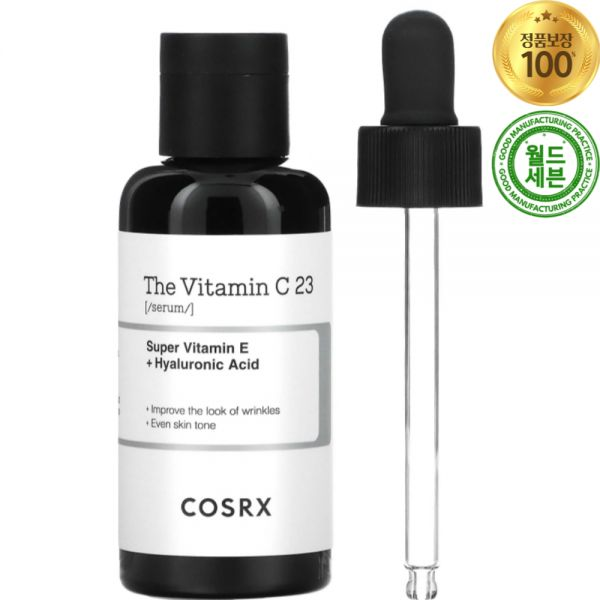
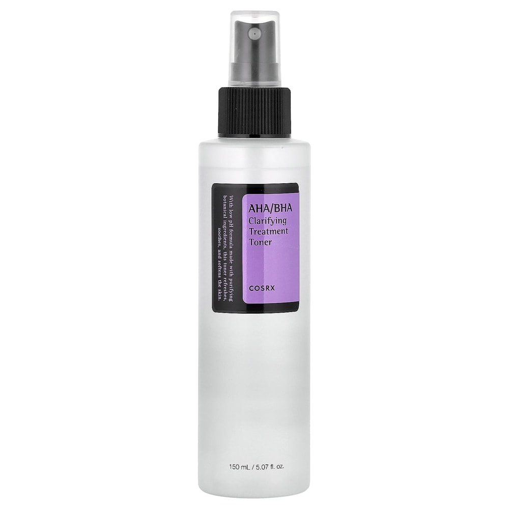
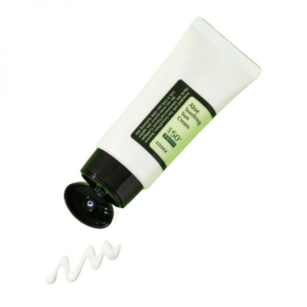
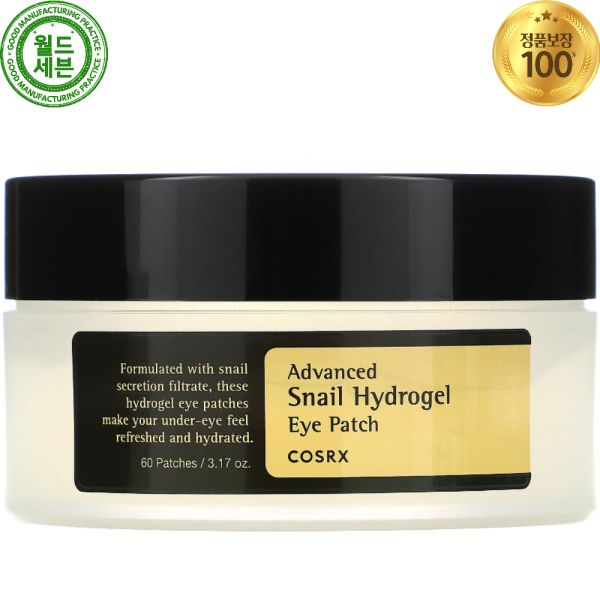

Home › K-Beauty Guide
The Best COSRX Products (K-Beauty Cult Favorites)
COSRX's greatest hits
COSRX's greatest hits. Here are 6 picks worth knowing — real products, honest notes, and roughly what they cost.

Advanced Snail 96 Mucin Power Essence
The cult snail-mucin essence for plump hydration.
The cult snail-mucin essence, at 96%, for plump, bouncy hydration and a healthy look. Slightly slippery texture that many use morning and night.
≈ $25.0 (approx) · Ships worldwide
Check price on Amazon →
The Vitamin C 23 Serum
Strong vitamin C for dark spots — a little goes far.
A high-strength 23% vitamin C serum aimed at dark spots and overall radiance. It's potent, so a small amount at night is plenty — best introduced slowly if you're new to vitamin C.
≈ $22.0 (approx) · Ships worldwide
Check price on Amazon →
AHA BHA Clarifying Treatment Toner
Mild exfoliating toner to smooth texture.
A mild AHA/BHA toner that gently smooths texture and helps keep pores clear. Use a few times a week and always follow with sunscreen.
≈ $16.0 (approx) · Ships worldwide
Check price on Amazon →
Low pH Good Morning Gel Cleanser
Gentle low-pH gel cleanser for daily use.
A low-pH gel cleanser that cleans without stripping, thanks to tea tree and BHA. A classic gentle daily cleanser for most skin types.
≈ $13.0 (approx) · Ships worldwide
Check price on Amazon →
Aloe Soothing Sun Cream SPF50+
Soothing aloe SPF for sensitive skin.
Aloe-based SPF50+ that calms while it protects, aimed at sensitive or easily-irritated skin. Lightweight with a comfortable, non-greasy finish.
≈ $16.0 (approx) · Ships worldwide
Check price on Amazon →
Advanced Snail Hydrogel Mask
Cooling hydrogel masks for soothing hydration.
Cooling hydrogel masks with snail mucin for soothing, plumping hydration. The two-piece hydrogel fit stays put better than thin sheets.
≈ $20.0 (approx) · Ships worldwide
Check price on Amazon →Save this for your next K-beauty haul
Prices are approximate and pulled from public shopping data; always check the retailer for the current price and shade/size before buying.